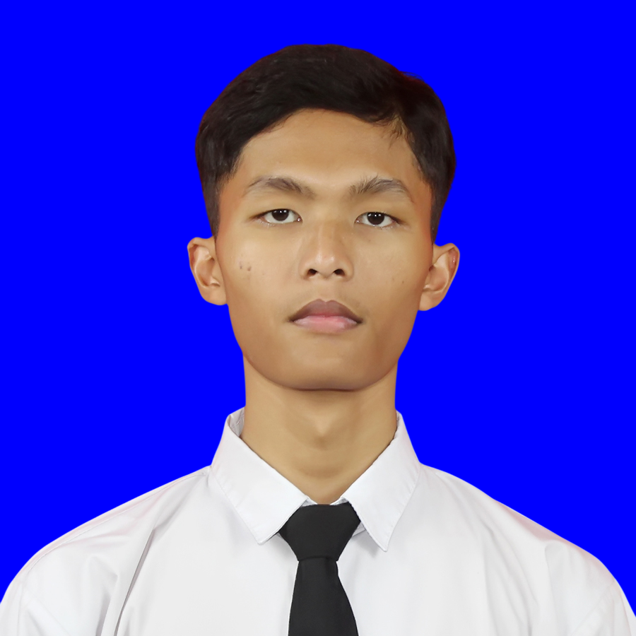

Garin Nur Falah
Fresh Graduate Software Engineering
Membangun solusi digital sambil belajar, berkembang, dan memberi dampak nyata.
Tentang Saya
Halo! Saya Garin Nur Falah, lulusan baru program studi Rekayasa Perangkat Lunak. Selama masa studi, saya terbiasa mempelajari berbagai teknologi dan menyelesaikan beragam proyek yang membantu mengembangkan kemampuan berpikir logis, pemecahan masalah, serta kerja sama tim. Saya memiliki semangat belajar yang tinggi, mudah beradaptasi dengan lingkungan baru, dan selalu tertarik untuk mengembangkan keterampilan di berbagai bidang.
Saat ini saya terbuka terhadap berbagai peluang karier, baik yang berkaitan dengan teknologi maupun bidang lainnya. Saya memandang setiap pekerjaan sebagai kesempatan untuk menambah pengalaman, memperluas wawasan, dan meningkatkan kemampuan profesional. Dengan kemauan belajar yang kuat, disiplin, serta tanggung jawab dalam bekerja, saya siap memberikan kontribusi terbaik dan terus berkembang bersama perusahaan.
Keahlian & Tools
Proyek Unggulan
QRScanX - Absensi QR
Aplikasi Android untuk absensi tenant berbasis QR Code. Tenant melakukan scan kode QR yang dinamis untuk mencatat kehadiran, disertai riwayat absensi dan manajemen data tenant. Dibangun dengan Android Studio (Java) dan database PostgreSQL.
CoolPlus - Pesan Galon
Aplikasi Android untuk pemesanan isi ulang galon. Customer dapat memesan galon, memilih jadwal antar, dan melihat riwayat pesanan. Dibangun dengan Android Studio (Java) dan database PostgreSQL untuk manajemen pesanan & pengiriman.
Catnisa - Game Makan
Aplikasi game sederhana yang memakan sebuah makanan yang jatuh dari atas dan harus diarahkan supaya dapat dimakan.
Hubungi Saya
Saya sangat terbuka untuk diskusi, kolaborasi, atau sekadar ngobrol soal teknologi. Jangan ragu untuk menghubungi saya!